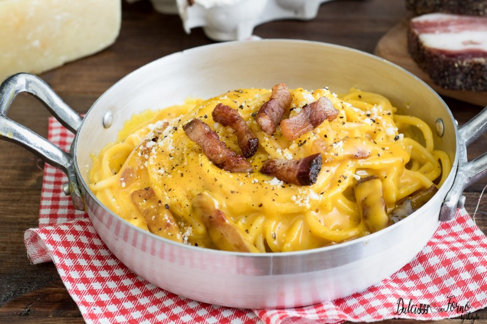

Ricette Italiane
Il meglio della cucina tradizionale italiana
Il meglio della cucina tradizionale italiana

Una ricetta romana amata in tutto il mondo, a base di uova,
guanciale, pecorino e pepe nero.
👉 per 4 persone
| Ingrediente | Quantità |
|---|---|
| Spaghetti | 400g |
| Guanciale | 150g |
| Uova | 4 (3 tuorli + 1 intero) |
| Pecorino Romano | 100g |
| Pepe nero | q.b. |